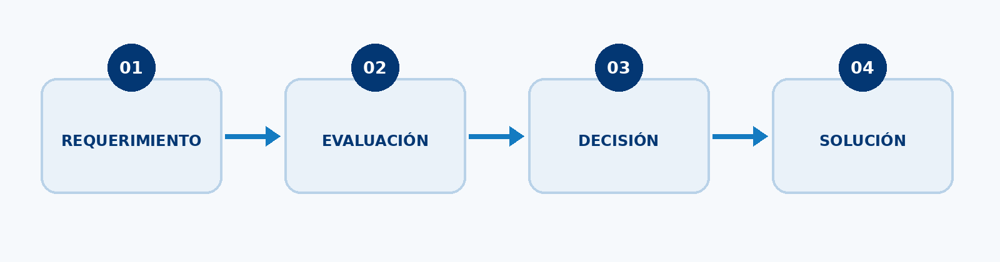
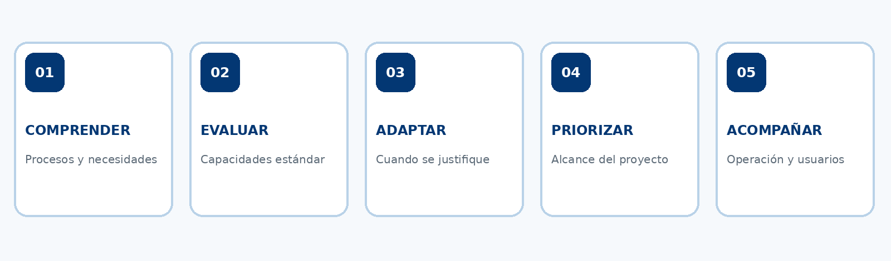

Un enfoque para tomar decisiones con criterio, responder a las necesidades del negocio y evitar complejidad innecesaria en los proyectos ERP.
Menos complejidad, más propósito en cada implementación.
Una implementación ERP no debería medirse por la cantidad de funcionalidades, desarrollos o personalizaciones incorporadas, sino por su capacidad para responder a las necesidades reales de una empresa.
Cuando una empresa decide implementar o actualizar su ERP, se enfrenta a un desafío que va más allá de elegir una herramienta tecnológica. Necesita comprender sus procesos, identificar oportunidades de mejora y determinar cómo aprovechar las capacidades de la solución para responder a sus objetivos empresariales.
Sin embargo, durante este proceso existe un riesgo: convertir cada requerimiento en un desarrollo, cada diferencia operativa en una personalización y cada necesidad en una nueva capa de complejidad.
Frente a este escenario, las implementaciones esbeltas proponen una manera diferente de abordar los proyectos: analizar antes de adaptar, aprovechar antes de desarrollar y tomar cada decisión con un propósito claro.
¿Por qué es importante evaluar antes de implementar?
Los sistemas ERP cuentan con funcionalidades diseñadas para gestionar diferentes procesos empresariales. No obstante, cada empresa tiene una estructura, una operación y unas necesidades particulares.
Por eso, trasladar automáticamente los procesos existentes a una nueva plataforma o intentar reproducir cada particularidad de la operación mediante desarrollos puede generar una solución más compleja de lo necesario.
Antes de definir cómo debe configurarse el sistema, es importante comprender qué necesita realmente el negocio.
Esto implica analizar los procesos actuales, identificar los requerimientos prioritarios y evaluar si las funcionalidades estándar del ERP pueden responder a ellos.
En muchos casos, la solución ya cuenta con capacidades suficientes para atender una necesidad, pero es necesario conocerlas y saber cómo aprovecharlas.
El análisis previo permite tomar decisiones fundamentadas, evitar adaptaciones innecesarias y orientar el proyecto hacia resultados concretos.

Cinco aspectos que deben orientar una implementación esbelta

1. Comprender los procesos antes de definir la solución
Una implementación exitosa comienza con el conocimiento de la operación.
Antes de configurar el ERP, es necesario comprender cómo funciona la empresa, qué actividades intervienen en cada proceso, dónde existen dificultades y cuáles son los resultados que se esperan alcanzar.
Esto permite identificar qué aspectos necesitan optimizarse y cuáles pueden mantenerse, evitando trasladar automáticamente prácticas que quizá ya no responden a las necesidades actuales.
La tecnología debe partir de la realidad del negocio, no de suposiciones sobre cómo debería funcionar.
2. Aprovechar las capacidades estándar de la solución
Uno de los principios de las implementaciones esbeltas es aprovechar al máximo las funcionalidades que ofrece el ERP antes de considerar desarrollos adicionales.
Las soluciones empresariales cuentan con herramientas de parametrización y configuración que permiten adaptar su funcionamiento a diferentes escenarios.
Conocer estas capacidades permite identificar alternativas que pueden resolver un requerimiento sin necesidad de construir funcionalidades desde cero.
Esto requiere experiencia y conocimiento del aplicativo, porque no siempre resulta evidente cuál es la mejor manera de atender una necesidad utilizando las herramientas disponibles.
El objetivo es evitar desarrollos y personalizaciones cuando no son necesarios, conservando una solución más sencilla de gestionar y evolucionar.
3. Reconocer cuándo una adaptación realmente aporta valor
Una implementación esbelta no significa que todos los requerimientos deban resolverse utilizando exclusivamente las funcionalidades estándar.
Existen necesidades específicas que pueden requerir configuraciones adicionales, extensiones o desarrollos.
La clave está en evaluar cada caso antes de tomar una decisión.
Para ello, conviene considerar:
- Qué necesidad concreta se busca resolver.
- Si existe una funcionalidad estándar que pueda atenderla.
- Qué beneficios aportaría una adaptación.
- Qué implicaciones tendría para la operación y la evolución del sistema.
Cuando una personalización está justificada, debe responder a una necesidad real y aportar valor a los procesos empresariales.
4. Definir prioridades y mantener el control del alcance
Durante una implementación pueden surgir nuevos requerimientos, oportunidades de mejora y necesidades que no siempre estaban contempladas al inicio.
Por eso, es importante establecer prioridades y evaluar cada solicitud según su impacto en el negocio.
Tener claridad sobre los objetivos del proyecto permite diferenciar lo indispensable de aquello que puede abordarse posteriormente.
Esto ayuda a mantener el enfoque, organizar los esfuerzos y evitar que el alcance crezca sin una justificación suficiente.
5. Preparar la operación y a las personas
Un ERP no funciona de manera aislada. Su implementación implica cambios en la forma en que las personas realizan sus actividades, consultan información y participan en los procesos.
Por eso, una implementación esbelta también debe considerar la preparación de los usuarios, la comprensión de los nuevos procedimientos y las condiciones necesarias para poner la solución en funcionamiento.
La meta no es solamente disponer de un sistema configurado, sino conseguir que la organización pueda utilizarlo adecuadamente en su operación diaria.
La eficiencia también está en saber qué no desarrollar.
Una implementación esbelta no consiste en reducir el alcance indiscriminadamente, eliminar funcionalidades necesarias o limitar la capacidad de adaptación de un ERP.
Consiste en tener el criterio para determinar qué necesita realmente la organización y cuál es la mejor manera de resolverlo.
En ocasiones, una funcionalidad estándar puede responder perfectamente a un requerimiento. En otras, una adaptación será necesaria para atender una particularidad del negocio.
La diferencia está en no asumir que desarrollar más significa solucionar mejor.
Cada desarrollo, configuración o personalización debe tener una justificación. De lo contrario, puede convertirse en una fuente adicional de complejidad para la operación y para la evolución futura del sistema.
Por eso, la eficiencia de un proyecto ERP no depende únicamente de las herramientas utilizadas, sino también del conocimiento y la experiencia de quienes toman las decisiones durante su implementación.
¿Cómo aborda Dynamics IT las implementaciones esbeltas?
En Dynamics IT entendemos que una implementación ERP requiere mucho más que conocimiento técnico. Requiere experiencia, comprensión de los procesos empresariales y capacidad para identificar la mejor alternativa frente a cada necesidad.
Nuestro enfoque de implementaciones esbeltas parte de aprovechar al máximo las capacidades del aplicativo, priorizando la parametrización y configuración antes de recurrir a desarrollos o personalizaciones.
Esta metodología se complementa con buenas prácticas, una ejecución cuidadosa y una orientación permanente a los resultados del cliente.
Además, buscamos ir más allá de los requerimientos iniciales cuando identificamos oportunidades que pueden aportar valor al proyecto, siempre que sea viable incorporarlas dentro de su alcance y tiempos establecidos.
Porque nuestra experiencia nos ha enseñado que una buena implementación no se trata de hacer más, sino de tomar mejores decisiones.
Conclusión: implementar mejor también significa simplificar
La calidad de una implementación ERP no está determinada por la cantidad de desarrollos o funcionalidades que incorpora, sino por la manera en que responde a los objetivos de la empresa.
Comprender los procesos, aprovechar las capacidades estándar, justificar las adaptaciones y mantener el foco en los resultados son aspectos fundamentales para evitar complejidad innecesaria.
Una implementación esbelta busca precisamente eso: construir una solución que responda al negocio sin agregar elementos que no necesita.
Porque implementar no consiste en incorporar tecnología por incorporar. Consiste en encontrar la mejor manera de hacer que funcione para el negocio.
Transformamos la tecnología en soluciones innovadoras para tu negocio.